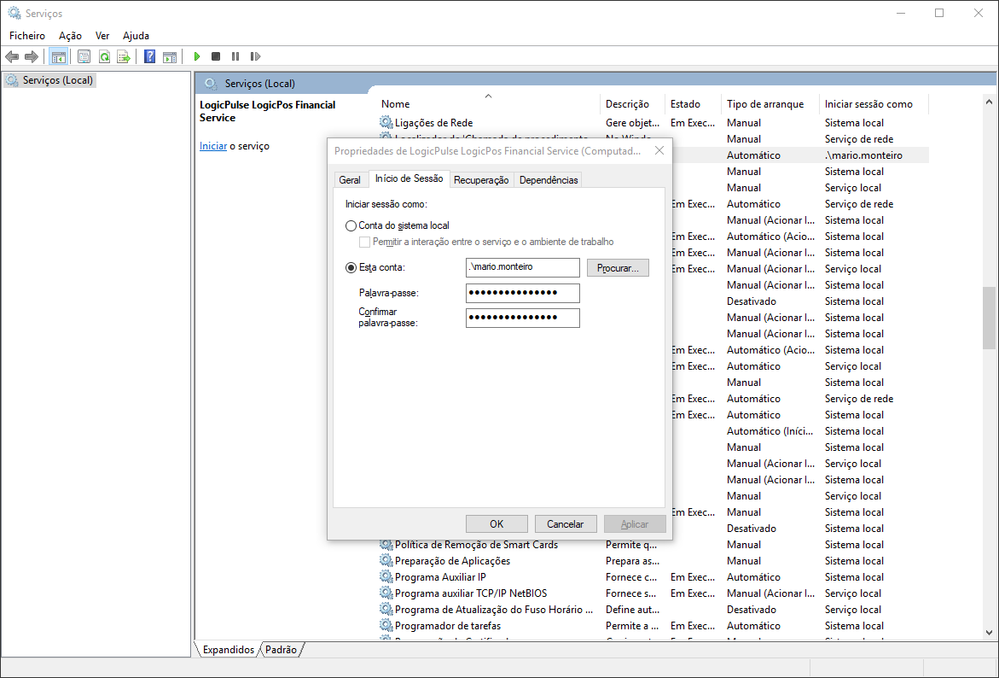
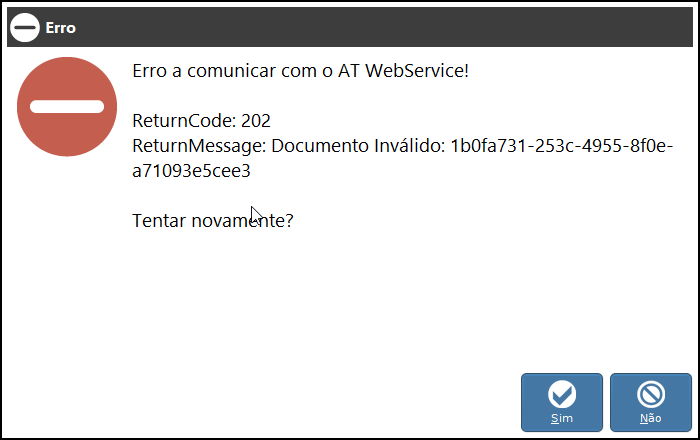
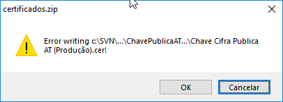

Logicpulse LogicPos : Install Binary/Pre Compiled Version Quick Setup Notes
Windows RunTime Requirements
1) Install Microsoft .NET Framework 4.6.1
2) GTK 2.12.22+
Note
installer in folder others\windowsruntime\gtk-sharp-2.12.22.msi
3) Install GTK Nodoka Theme Engine
copy others\windowsruntime\libnodoka.dll to
c:\Program Files\GtkSharp\2.12\lib\gtk-2.0\2.10.0\engines\ (32bit), or
c:\Program Files (x86)\GtkSharp\2.12\lib\gtk-2.0\2.10.0\engines\ (64bit)
4) Required to Restart Windows (GTK Runtime Requirement)
5) Now we can install/Run LogicPos
Database Requirements
To work with LogicPos we need a data store, currently we can use MySql Server, Miscrosoft SqlServer or Sqlite, bu technically we can use any data source comopatible with eXpressPersistent Objects™ (XPO)
Note
- To work with MySql Server or Miscrosoft SqlServer we need first to install server
- To Work With Sqlite we dont need to install anything
Tip
- Recommended data sources: Mysql and SqlServer
Configure LogicPos Database Connection
After we choose a data store we need to configure it in application config
Open and edit config logicpos\bin\Debug\logicpos.exe.config
Configure Database
- Option #1 : Mysql
To work with MySql we need to edit xpoConnectionString to connect to local or remote MySql Server Instance
local
<add key="databaseType" value="MySql" /> <add key="xpoConnectionString" value="XpoProvider=MySql;server=localhost;database={0};user id=root;password=PASSWORD;persist security info=true;CharSet=utf8;" />
Note
For remote server change localhost with remote ip, for ex 192.168.1.1
Dont forget to change user id, password according your needs.
- Option #2 : SqlServer
To work with SqlServer we need to edit xpoConnectionString to point to our SqlServer Server Instance
local
<add key="databaseType" value="MSSqlServer" /> <add key="xpoConnectionString" value="XpoProvider=MSSqlServer;Data Source=SERVER\sql2008;Initial Catalog={0};User ID=sa;Password=PASSWORD;Persist Security Info=true;" />
Note
Dont forget to change user id, password according your needs.
- Option #3 : SqlServer Express
To work with SqlServer Express we need to edit xpoConnectionString to point to our SqlServer Express Instance, the connection string is a little diferent
<add key="databaseType" value="MSSqlServer" /> <add key="xpoConnectionString" value="XpoProvider=MSSqlServer;Data Source=.\SQLEXPRESS;Initial Catalog={0};User ID=mario.monteiro;Password=logicpulse#2014;Persist Security Info=true;Integrated Security=SSPI;Pooling=false;" />
- Option #4 : Sqlite
<add key="databaseType" value="SQLite" /> <add key="xpoConnectionString" value="XpoProvider=MonoLite;uri=file:{0}.db" />
Run LogicPos
After Configure LogicPos Database Connection we can run LogicPos from logicpos\bin\Debug\logicpos.exe
Tip
Tip"
If we have problems running LogicPos we can look or tail the log locate at logicpos\bin\Debug\logicpos.log
Install AT WebService from Binaries/Pre compiled
After successfully run LogicPos, we can setup AT WebServices to test with AT SandBox (Test Mode)
Web Service Config Parameters
LogicposFinancialService.exe.config
<!--Global|Shared for DC|WB--> <add key="servicesATRequestTimeout" value="5000" /> <!--Default:5000|Disabled:-1--> <add key="servicesATTestModeFilePublicKey" value="ChavePublicaAT.cer" /> <add key="servicesATTestModeFileCertificate" value="TesteWebservice.pfx" /> <add key="servicesATProdModeFilePublicKey" value="000000000_0000.cer" /> <add key="servicesATProdModeFileCertificate" value="000000000.pfx" /> <!--DC:Documents--> <add key="servicesATDCTestMode" value="true" /> <!--WB:WayBill Documents--> <add key="servicesATWBTestMode" value="true" /> <add key="servicesATWBAgriculturalMode" value="true" />
Note
ATProd configs corresponds own company certificates, here are ommited with 000000000
Note
"Note"
Above config is working in test mode/sandbox, note the follow config parametes servicesATDCTestMode, servicesATWBTestMode and servicesATWBAgriculturalMode enabled with true, to enable production mode change true to false and put your own certificates in directory, and change filess in servicesATProdModeFilePublicKey and servicesATProdModeFileCertificate
Windows Install Service
Note
-
We need a full path to
LogicposFinancialService.exeto install windows service, here we uselogicpos\bin\Debug\LogicposFinancialService.exelocated in development environment, inside Debug folder -
Change path according your needs, edit
logicpos\bin\Debug\Scripts\Win\AtWs\service_install.batand check path toLogicposFinancialService.exe -
Default in
service_install.batis:
SC create logicpulselogicposfinancialservice displayname= "LogicPulse LogicPos Financial Service" binpath= "\"c:\SVN\logicpos\trunk\src\logicpos\logicpos_pos_opensource\logicpos\bin\Debug\LogicposFinancialService.exe\"" start= auto
1) Open a command line with adminstrator privileges and type above commands
cd c:\SVN\logicpos\trunk\src\logicpos\logicpos_pos_opensource\logicpos\bin\Debug\Scripts\Win\AtWs service_install.bat [SC] CreateService SUCCESS
If service is installed succefully, we receive a [SC] CreateService SUCCESS return message, like we see above
2) Check if service is installed in windows, open windows services and find LogicPulse LogicPos Financial Service

2) We must assign a user to run the service, else we have error permissions locating and use certificates, press right mouse in service to pull context menu, and choose properties, next assign a user to service, using username and passoword

3) Test and Run Service, press right mouse in service to pull context menu, and choose start
4) Test Service Url http://localhost:50391/Service1.svc

Uninstall, Start and Stop Bats
To Install, Unistall, Start or Stop we can use above bats, or use windows services control pannel
logicpos.framework\logicpos.financial.service\Utils\service_start.bat logicpos.framework\logicpos.financial.service\Utils\service_stop.bat logicpos.framework\logicpos.financial.service\Utils\service_uninstall.bat
Location of Certificates
AT WebService requires certificates to work, currently the LogicPos distro has TesteWebService certificates pre installed in directory Resources\Certificates
ex
Resources\Certificates\508278155.pfx Resources\Certificates\508278155_1115.bat Resources\Certificates\508278155_1115.cer Resources\Certificates\ChavePublicaAT.cer Resources\Certificates\TesteWebservice.pfx
Test/Enable AT WebService
First edit webservice config filesLogicposFinancialService.exe.config (runtime), or logicpos.financial\logicpos.financial.service\App.config (devenv)
logicpos config files and change serviceATSendDocuments and serviceATSendDocumentsWayBill to true to enable send documents, else webservice ignore send documents, we need to change both configurations.
To test AT WebService, and after start windows service (above steps), we can launch LogicPos and emmit some Financial and WayBill Documents, they use a diferent endpoint in AT WebServices, its advised to test both
Again we can view/tail the log file, to expose whats appening with windows service, the log file is located in logicpos.framework\logicpos.financial.service\bin\Debug\logicpos.financial.service.log
we can use a tool like baretail to tail the log
we can see service bootstrap like:
2018-04-17 10:44:00,748 [INFO ] logicpos.financial.service.Program : Init XpoDefault.DataLayer: [XpoProvider=MySql;server=localhost;database=logicposdb;user id=root;password=admin#;persist security info=true;CharSet=utf8;] 2018-04-17 10:44:02,210 [DEBUG] logicpos.financial.service.Objects.Utils : BootStrap Framework Console Service Project.... 2018-04-17 10:44:02,210 [DEBUG] logicpos.financial.service.Objects.Utils : ServicesATEnableTestMode: [True] 2018-04-17 10:44:02,211 [DEBUG] logicpos.financial.service.Program : Service URI: http://localhost:50391/Service1.svc 2018-04-17 10:44:02,211 [DEBUG] logicpos.financial.service.Objects.Utils : Launch service? [Y or Enter] or any other key to run in interactive develop/debug mode 2018-04-17 10:47:25,521 [INFO ] logicpos.financial.service.Program : Init XpoDefault.DataLayer: [XpoProvider=MySql;server=localhost;database=logicposdb;user id=root;password=admin#;persist security info=true;CharSet=utf8;] 2018-04-17 10:47:26,141 [DEBUG] logicpos.financial.service.Objects.Utils : BootStrap Framework Console Service Project.... 2018-04-17 10:47:26,141 [DEBUG] logicpos.financial.service.Objects.Utils : ServicesATEnableTestMode: [True] 2018-04-17 10:47:26,141 [DEBUG] logicpos.financial.service.Program : Service URI: http://localhost:50391/Service1.svc 2018-04-17 10:47:26,141 [DEBUG] logicpos.financial.service.Objects.Service.Service : Service Construct 2018-04-17 10:47:26,141 [DEBUG] logicpos.financial.service.Program : Service.Run(service) 2018-04-17 10:47:26,144 [DEBUG] logicpos.financial.service.Objects.Service.Service : Service OnStart 2018-04-17 10:47:26,161 [DEBUG] logicpos.financial.service.Program : Service Started 2018-04-17 10:47:26,162 [DEBUG] logicpos.financial.service.Objects.Utils : ModifyHttpSettings: 'netsh http add urlacl url=http://+:50391/ user=\Todos'
Start Service Log and Emmit Some Financial Invoices Documents

log
Send Document DocumentNumber: [FS FS002012018S01/29]/WayBillMode: [False] Send Document ReturnCode: [0] Send Document ReturnMessage: [Documento registado com sucesso.] Send Document DocumentNumber: [FS FS002012018S01/30]/WayBillMode: [False] Send Document ReturnCode: [0] Send Document ReturnMessage: [Documento registado com sucesso.] Send Document DocumentNumber: [GT GT002012018S01/5]/WayBillMode: [True] Send Document ReturnCode: [0] Send Document ReturnMessage: [OK]
If everything is Ok we can see that we have communication with TestMode WebService in above log and dont have any errors. ex Send Document ReturnMessage: [OK]
AT WebService problem Resolution
Sometimes we can get some problems like:
Wrong database in Config

If we get errors with invalid documents, the cause can be wrong database configuration, sometimes we change default database name logicposdb in development environment, both logicpos and webservice must be using same database, else webservice cant find document in database, to fix this use same database name in logicpos and webservice
log
2018-04-17 11:42:55,808 [DEBUG] logicpos.financial.service.Objects.Utils : Error 202: [Documento Inválido: 321a84c4-677a-4ea1-a024-860e87a960e1]
Correct the database name on SettingsApp.cs on both projects
public static string DatabaseName = "logicposdb";
Problems With Expired Certificate
Sometimes we get this type of error in logs
2018-04-17 12:30:57,035 [DEBUG] logicpos.financial.service.Objects.Utils : Send Document DocumentNumber: [FS FS008012018S01/1]/WayBillMode: [False] 2018-04-17 12:30:57,120 [DEBUG] logicpos.financial.service.Objects.Utils : Cert Subject: [CN=TesteWebServices, OU=ASI, O=AT - Autoridade Tributaria e Aduaneira, L=Lisboa, S=Lisboa, C=PT], NotBefore: [02/08/2017 15:06:39], NotAfter: [29/01/2018 14:06:39] 2018-04-17 12:30:57,329 [ERROR] logicpos.financial.service.Objects.Modules.AT.ServicesAT : A ligação subjacente foi fechada: Erro inesperado ao enviar. System.Net.WebException: A ligação subjacente foi fechada: Erro inesperado ao enviar. ---> System.IO.IOException: Falha da autenticação porque a parte remota fechou a sequência de transporte. em System.Net.Security.SslState.StartReadFrame(Byte[] buffer, Int32 readBytes, AsyncProtocolRequest asyncRequest) .... 2018-04-17 12:30:57,397 [DEBUG] logicpos.financial.service.Objects.Utils : Exception: [A ligação subjacente foi fechada: Erro inesperado ao enviar.] 2018-04-17 12:30:57,511 [DEBUG] logicpos.financial.service.Objects.Utils : Error 200: [A ligação subjacente foi fechada: Erro inesperado ao enviar.]
The cause is that Test certificates has been expired NotBefore: [02/08/2017 15:06:39], NotAfter: [29/01/2018 14:06:39]
When this occur we must login in faturas.portaldasfinancas.gov.pt and download updated certicates
We can get certificates from this link certificados.zip or go to certificados link
After we download certificados.zip we must extract to Runtime/Development folders to update old expired certificates, but first we must stop windows service, to prevent above error replacing certificate

1) extract and copy
TesteWebServices.pfx > Resources\Certificates\TesteWebService.pfx Chave Cifra Publica AT (Produção).cer > Resources\Certificates\ChavePublicaAT.cer
Warning
Filenames are diferent from target filenames, and note that we removed last [s] from TesteWebService[s].pfx
2) Restart windows service and test again